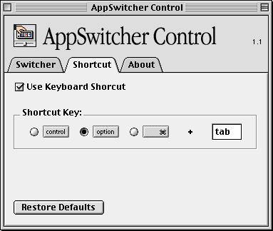

AppSwitcher Control
Version 1.1 1998-09-21
by pascal
appswitcher@pascal.com
Description:
AppSwitcher Control is a handy application which allows you to customize the appearance and behavior of the Application Switcher in Mac OS 8.5. AppSwitcher Control is free.
Requirements:
AppSwitcher Control requires a PowerPC Macintosh running Mac OS 8.5.
Download AppSwitcher Control 1.1 (286K) ( RequiresStuffit Expander 5)

Version History:
v1.0 1998-09-17
- Initial Release. My first Macintosh application ever.
v1.1 1998-09-21
- Revised layout of options using more visual elements. Eliminated popup menus.
- Added miniature representation of the screen which allows you to visually set position, orientation, and grow direction, all at once.
- Added ability to edit name width. Click the arrows to increment or decrement by 10 pixels. Shift-click to increment or decrement by 1 pixel.
- Added ability to order by name or launch order, normal or reverse.
- AppSwitcher Control now reads the Application Switcher's settings only the first time you launch it. When you quit AppSwitcher Control, it saves your settings to its own preferences file. From then on, it reads settings from its preferences file at launch. This results in much faster launch times.
- AppSwitcher Control now does a better job of loading the existing settings.
- AppSwitcher Control now remembers which tab was frontmost when you last used the application.
- Added balloon help for just about everything.
- General cleanup of the internal workings of the app.
More to come!
Planned Features:
- Optimize communication with the Application Switcher
- Add support for more keys in the keystroke field
- Add support for more than one modifier key
- Any suggestions?
Please send your feedback to appswitcher@pascal.com. Let me know what you'd like to see in the next version!
Note: Because AppSwitcher Control is simply modifying the settings of the Application Switcher, which is built in to Mac OS 8.5, there is a limit to what it can do.
Most Frequently Asked Question:
Q. Can you set the Application Switcher to automatically hide other applications when switching?
A. Unfortunately, no. However, you can option-click on an application in the Application Switcher to hide the current application when switching to the next.
My Story:
1998-09-17
Although I've been using a Macintosh for years, I've never programmed any Macintosh applications. I've played around with AppleScript, as well as a fair amount of JavaScript and a wee bit of Perl in my job as a web designer. But I wanted to build REAL applications. I bought a book called Programming Starter Kit for Macintosh, but even that was over my head. I resigned myself to being a user. Eck.
Then I started playing around with a program called REALbasic a few days ago. Last night at about 8pm I started building this little application as an experiment. Here it is not 24 hours later and the damn thing is done!
REALbasic is an amazing tool from RealSoftware. If you've ever wanted to build Macintosh applications but found the task too daunting, you owe it to yourself to check out REALbasic!
http://www.realsoftware.com/
Disclaimer:
Appswitcher Control is provided as-is for your enjoyment. The author cannot be held responsible of any damage it might cause. There is no warranty, express or implied.
Appswitcher Control is ©1998 pascal.